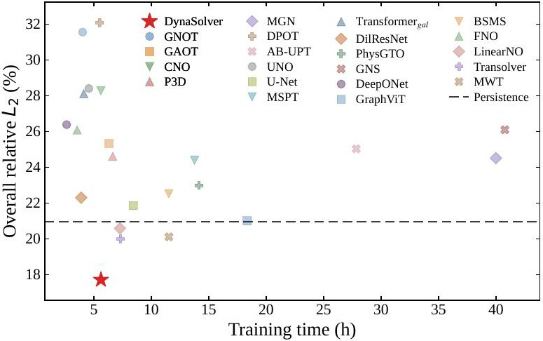
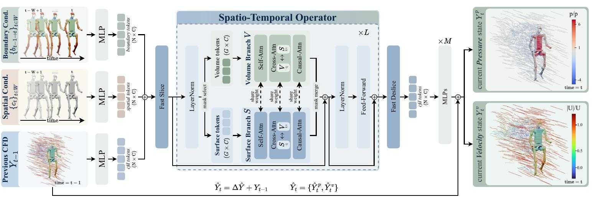
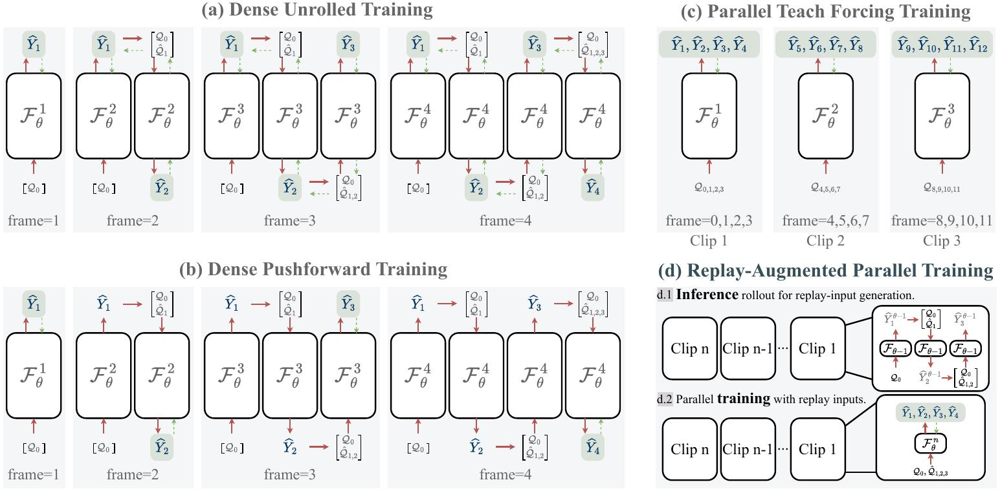

Video
Overview of RoboCFD-4D and DynaSolver (2:55, with narration).
Abstract
Neural operators provide efficient surrogates for computational fluid dynamics (CFD), but most are designed for static geometries and are not equipped to model unsteady flows induced by continuously moving boundaries. We study dynamic-boundary 4D CFD prediction for articulated moving geometries and introduce RoboCFD-4D, a temporally resolved robotic CFD benchmark spanning diverse morphologies and flow conditions. To address the computational and autoregressive challenges of this setting, we propose DynaSolver, a neural operator that explicitly conditions on boundary evolution and causal flow history. DynaSolver employs an efficient physical-token formulation that amortizes point-to-token projection across the operator stack, substantially reducing repeated point-space spatiotemporal computation while retaining accurate point-level reconstruction. We further introduce Replay-Augmented Parallel Training, which exposes the model to autoregressively generated histories while preserving parallel dense supervision, narrowing the gap between ground-truth-conditioned training and autoregressive rollout. Experiments on RoboCFD-4D show that DynaSolver achieves the best full-rollout accuracy among a broad range of learned CFD surrogates, with its advantage increasing as rollout proceeds, indicating substantially reduced autoregressive error accumulation.
Experiments
Quantitative comparison
On RoboCFD-4D Base we report relative L2 (%) of velocity and pressure at selected rollout steps, plus full-rollout averages. Persistence is a no-learning baseline and is excluded from ranking. DynaSolver is not the strongest at the first step, but it is best from mid-horizon onward, so the full-rollout overall error is lowest.
| Method | Per-frame Velocity ↓ | Per-frame Pressure ↓ | Avg. Vel. ↓ | Avg. Pre. ↓ | Overall ↓ | ||||||||||
|---|---|---|---|---|---|---|---|---|---|---|---|---|---|---|---|
| 1 | 6 | 12 | 18 | 24 | 29 | 1 | 6 | 12 | 18 | 24 | 29 | ||||
| GNOT | 11.38 | 21.14 | 28.47 | 34.58 | 40.01 | 43.99 | 34.08 | 72.89 | 93.49 | 98.66 | 102.21 | 99.18 | 30.56 | 87.84 | 31.55 |
| GAOT | 14.46 | 19.54 | 23.58 | 26.93 | 29.66 | 31.19 | 40.96 | 57.70 | 66.52 | 75.18 | 84.08 | 90.67 | 24.60 | 70.25 | 25.32 |
| CNO | 9.32 | 19.36 | 24.27 | 28.49 | 35.25 | 47.04 | 34.24 | 77.09 | 87.29 | 98.14 | 108.89 | 120.71 | 27.12 | 91.52 | 28.28 |
| P3D | 9.32 | 17.07 | 22.62 | 26.70 | 30.44 | 32.36 | 32.55 | 62.66 | 76.03 | 85.25 | 96.86 | 102.08 | 23.72 | 78.82 | 24.61 |
| MGN | 9.49 | 19.70 | 23.69 | 25.88 | 27.66 | 28.55 | 29.32 | 65.02 | 79.25 | 86.55 | 96.78 | 99.86 | 23.48 | 79.44 | 24.51 |
| DPOT | 13.66 | 22.65 | 26.70 | 32.77 | 39.39 | 44.98 | 42.45 | 78.12 | 103.77 | 133.25 | 166.67 | 187.97 | 30.30 | 121.10 | 32.08 |
| AB-UPT | 14.75 | 19.60 | 23.36 | 25.68 | 27.92 | 29.38 | 42.29 | 77.47 | 91.30 | 96.30 | 97.54 | 96.23 | 23.83 | 86.84 | 25.03 |
| UNO | 11.71 | 18.17 | 22.82 | 26.91 | 34.53 | 62.31 | 34.13 | 58.36 | 71.43 | 81.76 | 104.69 | 156.99 | 27.32 | 81.55 | 28.40 |
| U-Net | 7.48 | 16.73 | 20.99 | 23.30 | 25.05 | 26.08 | 27.90 | 61.64 | 78.41 | 85.41 | 96.04 | 95.75 | 20.81 | 77.99 | 21.86 |
| MSPT | 9.28 | 19.15 | 23.18 | 25.89 | 28.14 | 29.94 | 27.70 | 61.18 | 73.90 | 86.65 | 101.71 | 110.88 | 23.42 | 79.14 | 24.39 |
| Transformergalerkin | 11.89 | 19.49 | 23.07 | 28.43 | 35.67 | 42.74 | 38.61 | 69.13 | 96.66 | 115.08 | 136.97 | 168.67 | 26.86 | 104.64 | 28.11 |
| DilResNet | 8.55 | 17.99 | 22.08 | 23.90 | 25.04 | 25.30 | 29.00 | 61.87 | 78.00 | 83.80 | 86.84 | 84.99 | 21.44 | 74.56 | 22.30 |
| PhysGTO | 9.41 | 18.51 | 21.85 | 23.68 | 25.69 | 26.97 | 30.52 | 60.97 | 70.12 | 78.40 | 89.10 | 92.79 | 21.81 | 72.96 | 22.99 |
| GNS | 9.67 | 19.74 | 24.31 | 27.72 | 30.70 | 32.74 | 29.69 | 61.92 | 78.24 | 89.28 | 99.89 | 106.83 | 24.97 | 80.91 | 26.09 |
| DeepONet | 16.68 | 21.74 | 26.20 | 28.05 | 28.29 | 28.67 | 60.07 | 73.64 | 86.37 | 91.34 | 92.49 | 90.63 | 25.51 | 84.65 | 26.38 |
| GraphViT | 8.33 | 17.05 | 20.41 | 22.18 | 23.61 | 24.44 | 28.28 | 57.98 | 69.36 | 71.16 | 75.61 | 76.20 | 20.15 | 66.05 | 21.00 |
| BSMS | 8.44 | 17.30 | 21.20 | 24.12 | 26.66 | 28.85 | 27.01 | 54.20 | 61.57 | 68.21 | 77.84 | 81.24 | 21.78 | 63.92 | 22.51 |
| FNO | 10.70 | 18.04 | 22.07 | 26.54 | 33.95 | 42.81 | 31.13 | 52.02 | 60.85 | 66.83 | 71.30 | 76.06 | 25.49 | 61.69 | 26.08 |
| LinearNO | 10.26 | 16.81 | 19.74 | 21.66 | 22.92 | 23.84 | 29.14 | 52.05 | 60.81 | 65.82 | 72.07 | 72.55 | 19.82 | 61.00 | 20.58 |
| Transolver | 10.19 | 16.24 | 19.10 | 20.73 | 22.38 | 23.45 | 29.77 | 54.27 | 61.51 | 66.99 | 74.53 | 75.64 | 19.23 | 62.76 | 19.99 |
| MWT | 9.55 | 16.50 | 18.67 | 20.26 | 22.03 | 23.35 | 32.05 | 57.19 | 70.58 | 83.28 | 97.58 | 106.52 | 18.97 | 76.64 | 20.11 |
| Persistence | 14.14 | 20.78 | 19.80 | 20.42 | 20.92 | 21.35 | 40.17 | 60.19 | 54.16 | 54.63 | 58.75 | 58.21 | 20.14 | 56.09 | 20.95 |
| DynaSolver (Ours) | 11.61 | 16.27 | 17.37 | 17.86 | 18.06 | 18.36 | 34.02 | 53.19 | 57.48 | 59.17 | 60.37 | 61.61 | 17.07 | 56.35 | 17.71 |
Table 1. Quantitative comparison across rollout horizons on RoboCFD-4D Base. Best in green; second-best underlined. Persistence is not ranked.
Rollout error trends
The same Base evaluation as curves: overall, velocity, and pressure relative L2 over the full autoregressive horizon. DynaSolver’s gap widens as rollout proceeds, especially for velocity, matching the late-horizon numbers in Table 1 (18.36% velocity and 61.61% pressure at step 29).
Figure 1. Rollout error evolution on RoboCFD-4D Base; curves are drawn frame by frame along the rollout horizon.
Accuracy versus training cost

Each point is one learned surrogate, placed by its training time and full-rollout error on RoboCFD-4D Base. The dashed line marks Persistence, a no-learning baseline that copies the last state.
Most baselines trade one for the other: fast models stay near the Persistence line, while accurate ones need several times longer to train.
Two choices avoid this trade-off. The token-space operator skips repeated point-space work, and Replay-Augmented Parallel Training avoids slow sequential unrolling.
Figure 2. Training wall-clock versus overall rollout error on RoboCFD-4D Base.
Qualitative comparison
Thirty autoregressive rollout frames on three robots (A1, G1, H1-2) at u = 2 m/s and two inflow angles. The first panel is the ground-truth field; the rest are point-wise error maps of DynaSolver and five baselines on one shared scale. Click the board to pause or resume.
RoboCFD-4D Dataset
RoboCFD-4D is a temporally resolved CFD benchmark of articulated robots in motion. Below are twenty robots, each under two wind conditions. Clips are muted 50-frame loops; click a clip to pause it.
Method
1Efficient 4D Sequence Modeling
DynaSolver predicts the next velocity and pressure field from the robot geometry, its boundary motion, and a short causal history of flow states. It is designed to do this cheaply and with explicit temporal reasoning.

Figure 3. DynaSolver pipeline. A single Fast Slice / Fast Deslice pair encloses the whole spatio-temporal operator stack.
Efficiency
WhyEvery transition carries thousands of surface and volume points. Point-space operators re-project points to tokens and run point-wise feed-forward layers in every layer, so a temporal window multiplies this heavy cost by both depth and window length.
HowWe slice once: lifted point features are encoded into compact surface and volume physical tokens, all self-, cross-, causal attention and feed-forward layers operate in token space, and a single deslice with a light MLP decodes the point-wise residual field.
ResultFor a window of W transitions and L operator blocks, point–token projection runs O(W) rather than O(LW) times, so deeper temporal reasoning adds only token-space cost while outputs stay point-accurate.
Temporal modeling
1Boundary evolution injection. Each transition is conditioned on the boundary motion between adjacent frames, giving the operator explicit information on how the geometry moves instead of inferring it from the flow.
2Causal sliding window. A short history of up to W transitions supplies the memory that a single, partially observed flow state lacks; the window grows from the initial state and then slides forward.
3Causal temporal attention. A block-causal mask lets each transition aggregate information only from itself and earlier transitions, so the model reasons over history exactly as it will during rollout and predicts a residual on top of the previous state.
2Replay-Augmented Parallel Training

Figure 4. (a–b) sequential unroll and pushforward; (c) parallel teacher forcing; (d) our replay-augmented parallel training.
Training an autoregressive solver is a case of you can’t have your cake and eat it: fast training or robust rollout.
Unroll and Pushforward feed the model its own predictions, so rollout is robust, but they unroll sequentially and take about 16.5 h. Parallel teacher forcing supervises every transition in one block-causal pass (1.8 h), yet it only ever sees ground-truth histories, so the error grows to 18.18% once the model rolls out on its own outputs.
We close this train–inference gap without giving up parallelism. A frozen previous-epoch model rolls out replay histories without gradients, and the current model is trained on a mix of replay and clean clips in a single parallel pass with ground-truth targets.
Both at once: the lowest rollout error, 16.14%, in just 3.38 h, beating Unroll while training about 4.9× faster.
RoboCFD-4D Mini, same DynaSolver architecture. Error bars start at 15%.
Citation
@article{qian2026dynasolver,
title = {DynaSolver: A Neural Operator for Autoregressive 4D Flow Prediction with Dynamic Boundaries},
author = {Qian, Rui and Dai, Shibo and Lin, Mengjun and Hou, Yuk-Kit and Zhang, Saining and Chen, Junhao and Zhao, Hao and Li, Chaojian},
journal = {arXiv preprint},
year = {2026}
}